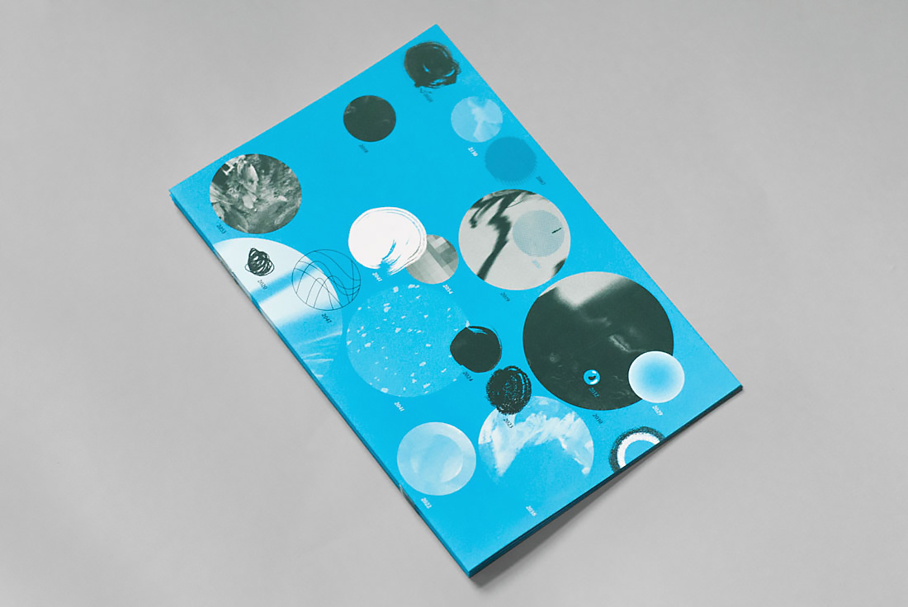

RISD Commencement 2015
Save the date card, invite (die cut), booklet, program (all offset)
Various
2015
With this year's commencement materials, I engaged a cliche of graduation by visualizing possible futures as abstracted portals.
Client
RISD Media
